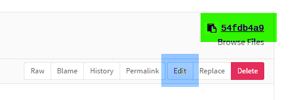

☰
☰
> Ville Durable
> Documentation |
|
L'atlas de la ville durable, initié par la DREAL Normandie a vocation à accueillir l'ensemble des projets se rapportant à la ville durable. C'est un outil complémentaire du document de référence que constitue pour nos services le référentiel "Vers des quartiers durables, pistes pour agir".
La carte de l'atlas de la ville durable en Normandie est établie sur la base des données renseignées par la DREAL et les DDTM. Il peut y avoir des erreurs à corriger ou des mises à jour nécessaires. Il n'est pas en général possible de procéder directement à ces mises à jour, mais il y a de multiples possibilités pour en proposer.
Vous pouvez facilement utiliser l'outil d'envoi de commentaires inclu au pied de la carte . Votre proposition viendra prendre place dans la liste des sujets à traiter.
La donnée utilisée est un fichier au format geojson à retrouver sur le dépôt de l'outil know-rmandie : data-normandie-hr.geojson. En créant un compte sur le dépôt (c'est facile à faire et peut également se faire en utilisant un compte github ou gitlab) il est possible :

Il est possible d'insérer la carte sur son site internet avec le code suivant
<iframe width="100%" height="500px" src="http://know-rmandie.gitlab.io/ville-durable/?carteSeule" style="border:0"></iframe>
Vous pouvez bien sur modifier la hauteur de la visualisation et sa largeur en modifiant les paramètres width et height ci-dessus.
Pour les agents de la DREAL ou des DDT(M) concernées, il est possible d'accéder directement à la base de données complète des écoquartiers sur le drive (un compte Google est nécessaire, Désolé)
Si vous souhaitez que les modifications soient rapidement prises en compte, signalez que vous avez fait des modifications en envoyant un mail au propriétaire du tableau ("Fichier / envoyer un e-mail aux collaborateurs...")
Lors de la consultation, en ajoutant &mot-clé (celui-ci étant le mot-clé qui vous a été fourni par ailleurs), vous pouvez également accéder à la "vue administrateur" qui permet de voir les projets abandonnés ou non validés ou de modifier la couche de fond.